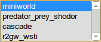

|  | Click on one of the built-in models in the Toolbar panel. |
| Click on the Tutor button in the Toolbar panel to use the built-in interactive tutorial. | |
| Build your own model using the standard System Dynamics symbols (stock, variable, flow and influence) at the top of the Toolbar panel. |